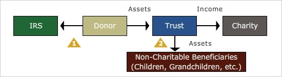

The Charitable Lead Trust (CLT) operates somewhat like a Charitable Remainder Trust, only in reverse. With a Charitable Lead Trust, the charity enjoys the income from the property for a period of time, and the trust distributes the property to the beneficiary(ies) when the trust terminates.
The following features are found in the trust document of a charitable lead trust:
-
Similar to a Charitable Remainder Trust, a Charitable Lead Trust may be structured to pay income either as a Charitable Lead Annuity Trust (CLAT) or Charitable Lead Unitrust (CLUT). However, they are typically structured as annuity trusts to keep the valuation simple.
-
The trust may last for the lifetime of the donor or another individual named by the donor, or for a specific number of years. Unlike a CRT, there is no limit to 20 years if a specific number of years is chosen.
-
For the donor to receive an immediate income tax deduction for making the gift, the charity's interest must be guaranteed by the document and the donor must be taxed on the income generated by the trust. If these conditions are met, the donor receives an immediate income tax deduction for the present value of the future income stream that will go to the charity; then, each year, the donor will be taxed on the trust income with no offsetting charitable deduction.
-
Unlike a CRT, no minimum payout is required.
Click each numbered bullet to learn more.

The Charitable Lead Trust is an excellent way to support charities while making discounted, deferred transfers to heirs. For example, with federal tax table rates at 5.4%, a 10-year CLAT, paying 7% annually (as valued when the trust was funded) to a charity, offers a 54% discount from market value on the assets that will go to the remainder beneficiaries. If the trust lasts for 15 years, the discount increases to 72%. Increase the trust to 20 years, and the discount rises to 86%. These discounts can result in substantial estate and gift tax savings for high net worth clients whose estate values are significantly above the amount that can be covered by their Applicable Credit/Exclusion Amount and where leverage is needed to maximize reductions in the size of their taxable estates with minimum use of their Applicable Credit Amount on lifetime transfers.